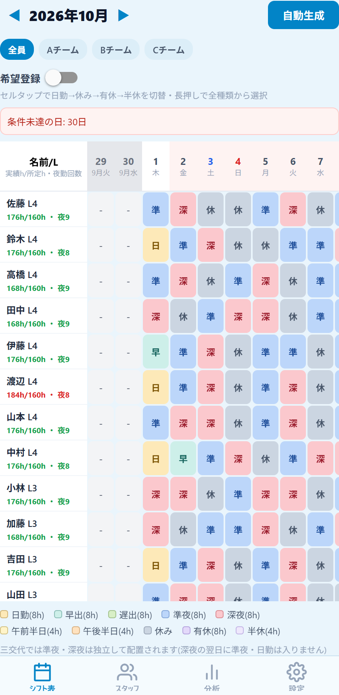
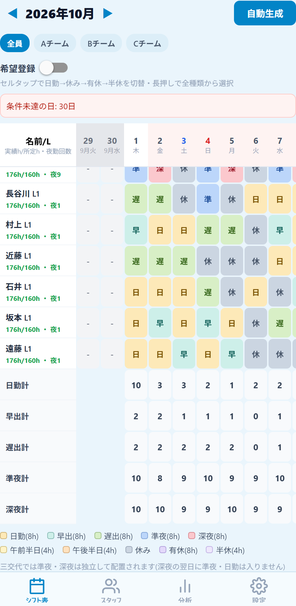
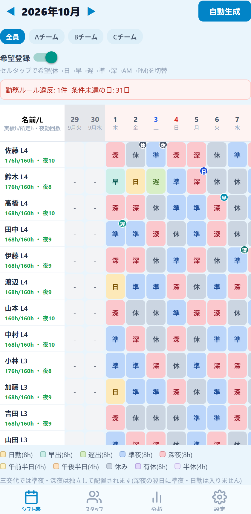
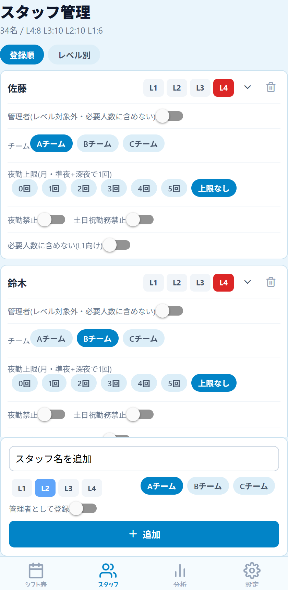
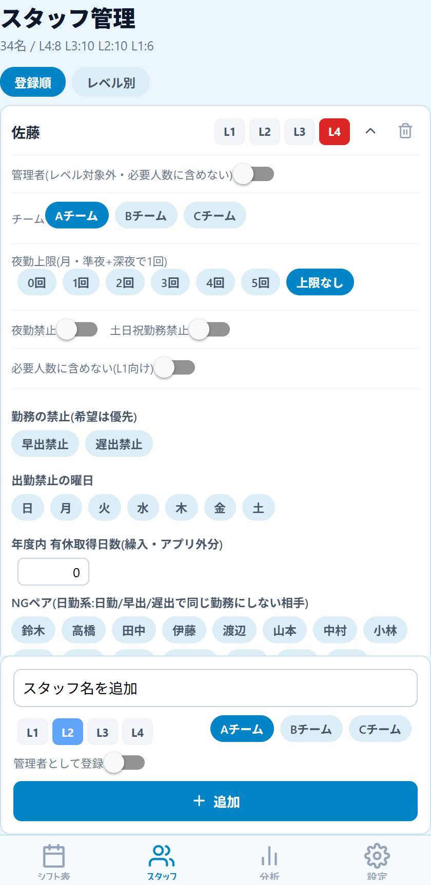
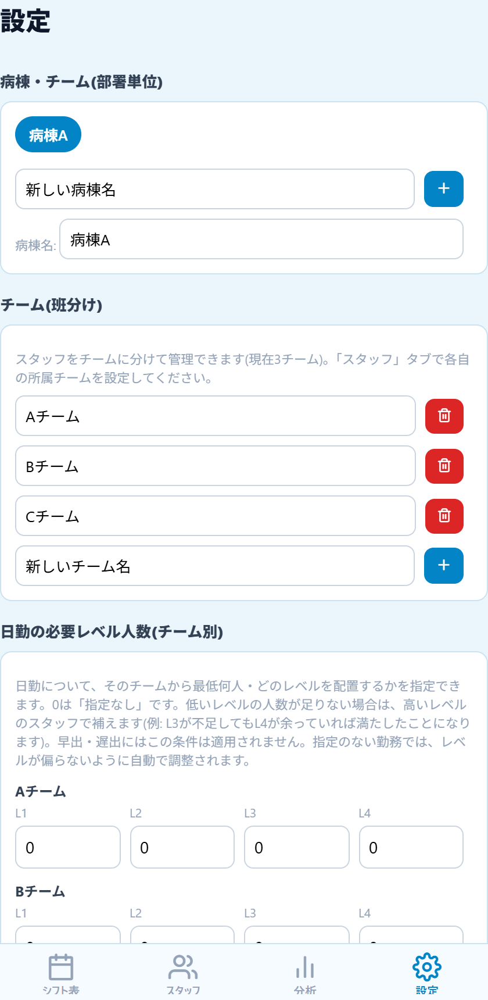
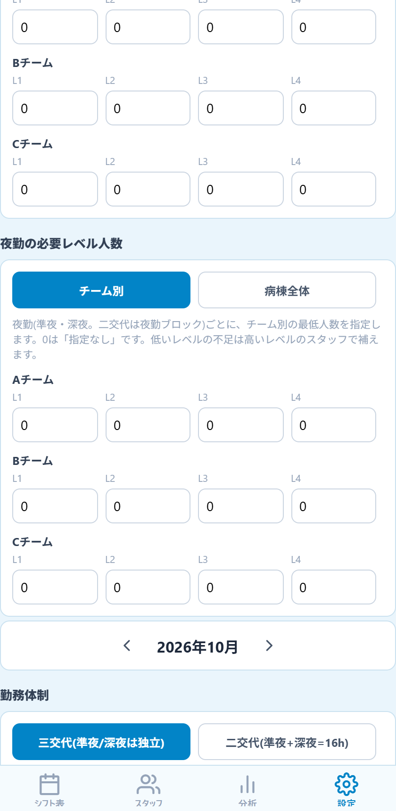
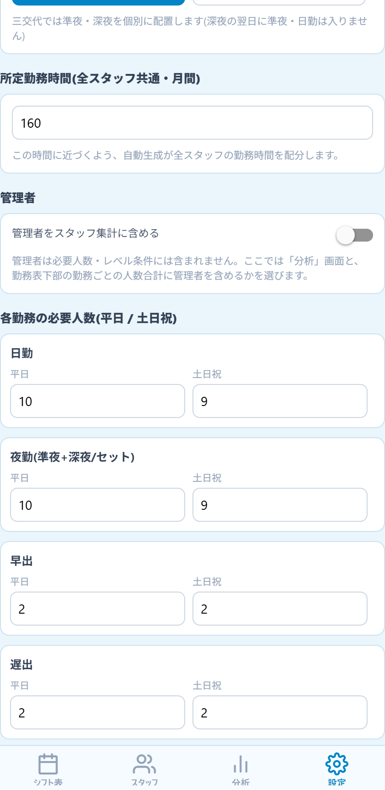
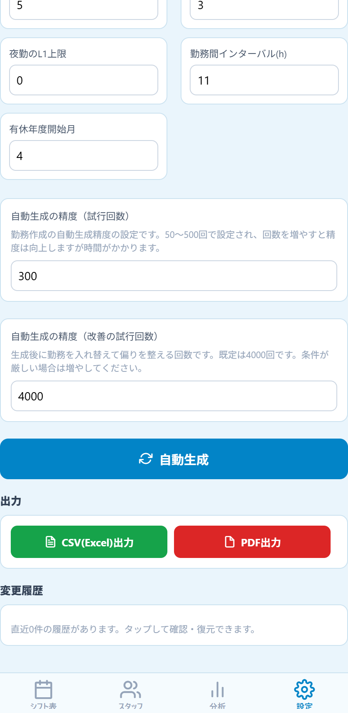
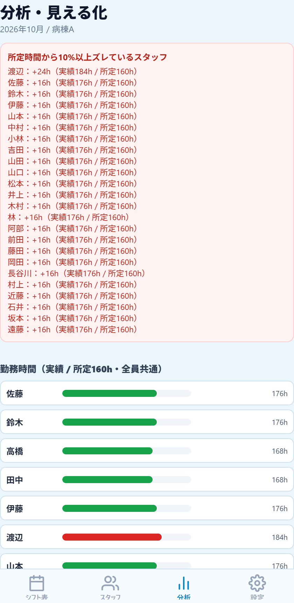

ShifNoa(シフノア)操作説明書
シフト作成もっとかんたんに。ShifNoa(シフノア)は、看護師の勤務表(シフト)を条件にあわせて自動で作成・調整するアプリです。画面下のタブ(シフト表／スタッフ／分析／設定)で画面を切り替えます。
1. はじめに(基本の流れ)
- 設定タブで病棟・チーム、勤務体制(三交代/二交代)、各勤務の必要人数などを決める。
- スタッフタブで職員の名前・レベル(L1〜L4)・所属チーム・夜勤上限などを登録する。
- シフト表タブで、休みなどの希望を登録する。
- 「自動生成」ボタンを押すと、条件を満たす勤務表が作られる。
- 赤枠・警告を見ながら、セルをタップして手で微調整する。
- 分析タブで勤務時間や夜勤回数の偏りを確認し、設定の「出力」から CSV(Excel) / PDF に出力する。
2. シフト表画面の見方

画面上部
- ◀ 2026年10月 ▶:表示する月の切り替え。
- 自動生成:勤務表を自動作成します。生成中は進み具合が表示されます。
- 全員 / Aチーム…:チームが複数あるとき、表示する職員を絞り込みます。
- 希望登録スイッチ:ONにすると、セルのタップが「希望の登録」になります(第4章)。
- ピンクの帯:警告。勤務ルール違反、インターバル不足、NGペア重複、条件未達の日の件数が出ます。
表の左側(名前列)
「佐藤 L4」=名前とレベル。その下の 176h/160h ・ 夜9 は実績時間/所定時間・夜勤回数です。所定から±10%以内は緑、不足は青、超過は赤で表示されます。管理者は「管理」、夜勤禁止の人は「🚫夜」と出ます。
表の本体(日付ごとのセル)
- 見出しは日付と曜日。日曜は赤、土曜は青。祝日は「祝」、病棟独自の休日は「休」が付きます。
- 灰色の列は前月末/翌月初(閲覧専用)。連勤や勤務間隔の確認用です。
- 条件を満たせていない日は見出しが薄い赤になります。見出しを長押しすると理由を確認できます。
- 右端の「夜勤・日勤・休み・年休・連休」は個人ごとの月間集計です(連休=休みが2日以上連続した回数)。「日勤」には早出・遅出・研修も含まれます。
- 画面を左右にスクロールすると月末まで見られます。名前列は固定されたままです。
勤務の種類と色
| 表示 | 勤務 | 時間 | 内容 |
|---|---|---|---|
| 日 | 日勤 | 8h(8–16時) | 通常の日中勤務 |
| 早 | 早出 | 8h(7–15時) | 早い時間帯の日勤 |
| 遅 | 遅出 | 8h(11–19時) | 遅い時間帯の日勤 |
| 準 | 準夜 | 8h(16–24時) | 夜勤の前半 |
| 深 | 深夜 | 8h(0–8時) | 夜勤の後半 |
| 午前 午後 | 午前/午後半日 | 4h | 半日勤務(手動入力用) |
| 研 | 研修 | 8h(8–16時) | 院内外の研修。日勤として勤務時間・日勤回数に数えますが、必要人数と人数合計には含めません |
| 休 | 休み | 0h | 公休 |
| 有 半 | 有休/半休 | 8h/4h | 有給休暇(半休は0.5日) |
画面下部:勤務ごとの人数合計

表の一番下に、日勤計・早出計・遅出計・準夜計・深夜計が日ごとに表示されます。必要人数に足りているかを一目で確認できます。管理者を含めるかどうかは設定画面で選べます。研修の人は病棟にいないため、日勤計には含まれません。
さらに下には勤務の色の凡例と、現在の勤務体制の説明が表示されます。
セルの枠の意味
- 赤い枠:ルール違反(連続勤務の上限超過、勤務間インターバル不足、NGペア同時、土日祝勤務禁止の違反など)。
- 橙の枠:登録した希望を反映できなかったセル。長押しすると理由が出ます。
3. 勤務の入力・修正
- タップ:セルをタップするたびに 日勤 → 休み → 有休 → 半休 と切り替わります(空欄から始まります)。
- 長押し:全種類の勤務(日勤・早出・遅出・準夜・深夜・午前/午後半日・研修・休み・有休・半休・クリア)から選べるメニューが開きます。
- 二交代の場合は、メニューの「夜勤(準夜+深夜+休み・3日ブロック・計16h)」で3日分をまとめて入力します。
- 修正すると、赤枠・警告・集計が即座に更新されます。
研修の入力
研修に行くスタッフは、セルを長押しして「研修(日勤扱い・人数に含めない)」を選びます。研修は次のように扱われます。
- 日勤として数える:勤務時間(8h)と、右端の「日勤」の回数に入ります。連続勤務の日数にも数えます。
- 人数には数えない:日勤の必要人数の判定、チーム別の必要レベル人数、表の下の「日勤計」には含めません。研修の人がいても、病棟の日勤者は必要人数どおりに配置されます。
- 病棟にいないため、NGペアの判定の対象外です。
4. 希望(休み・勤務)の登録

- 「希望登録」スイッチをONにします(緑になります)。
- 希望を入れたいセルをタップします。タップのたびに、休 → 日 → 研 → 早 → 遅 → 準 → 深 → AM → PM → なし(三交代の場合)と切り替わります。
- 研修の予定が決まっている日は「研」にします。自動生成で必ずその日が研修になり、残りの日勤者で必要人数を満たすように作られます。
- セルの右上に小さな丸いマーク(上図の「休」「日」「遅」など)が付きます。これが希望です。
- 「自動生成」を押すと、希望(研修を含む)が優先して反映されます。
- スイッチをOFFにすると通常の入力に戻ります。
画面上部に「反映できなかった希望: n件」が出た場合、該当セルが橙の枠になっています。長押しすると理由(人数や連勤の制約など)を確認できます。
5. スタッフ画面

上部に人数とレベル別の内訳(例:34名 / L4:8 L3:10 L2:10 L1:6)が出ます。「登録順」「レベル別」で並びを切り替えられます。
職員カードの項目
- 名前:直接入力して変更できます。
- L1〜L4:経験レベル(L1 初級 / L2 中堅 / L3 上級 / L4 ベテラン)。
- ▼:詳細設定を開く。 ゴミ箱:職員を削除。
- 管理者スイッチ:師長など。レベル・必要人数の対象外で、平日日勤を基本に組みます。
- チーム:所属チームを選択。
- 夜勤上限:月の夜勤回数の上限(0〜5回/上限なし)。準夜+深夜で1回と数えます。
- 夜勤禁止 / 土日祝勤務禁止:その職員をその勤務に入れません。
- 必要人数に含めない:新人(L1)など、人数の頭数に数えない職員に使います。

詳細設定(▼を押すと開きます)
- 早出禁止 / 遅出禁止:その勤務に入れません(本人の希望は優先)。
- 出勤禁止の曜日:選んだ曜日は出勤させません。
- 年度内 有休取得日数:アプリ外で取得済みの有休日数。年休の集計に加算されます。
- NGペア(日勤系/夜勤系):同じ勤務に一緒に入れたくない相手を選びます。
画面最下部の入力欄から、名前・レベル・チームを選んで「＋追加」で新しい職員を登録できます。
6. 設定画面
設定は上から順に、自動生成の「条件」を決める画面です。下までスクロールして「自動生成」「出力」まで進みます。

病棟・チーム
- 病棟:丸いボタンで切り替え。「新しい病棟名」＋「＋」で追加、病棟名の欄で名称変更、ゴミ箱で削除(スタッフ・勤務データも消えます)。病棟ごとに職員も設定も別管理です。
- チーム(班分け):名前の変更、追加、削除ができます。削除したチームの職員は別のチームに移動します。
日勤の必要レベル人数(チーム別)
各チームから日勤に最低何人・どのレベルを入れるかを指定します。0は指定なし。低いレベルが足りなければ高いレベルで補えます(L3不足でもL4がいればOK)。早出・遅出には適用されません。

夜勤の必要レベル人数
「チーム別」か「病棟全体」かを切り替えて、夜勤1回(準夜・深夜それぞれ)に必要なレベル別の最低人数を入れます。
月の切り替え
設定画面でも ◀ ▶ で対象月を変えられます。
勤務体制
- 三交代:準夜・深夜を別々に配置。深夜の翌日に準夜・日勤は入りません。
- 二交代:「準夜(8h)→深夜(8h)→休み」を1セット(16h)で配置。深夜の翌日は自動で休みです。

所定勤務時間
全員共通の月間時間(初期値160h)。自動生成はこの時間に近づくよう配分します。
管理者
管理者を分析画面と勤務表下部の人数合計に含めるかを選びます(必要人数の判定には含まれません)。
各勤務の必要人数(平日 / 土日祝)
日勤・夜勤(準夜+深夜)・早出・遅出ごとに、1日に必要な人数を平日と土日祝で別々に設定します。

その他の条件
- 連続勤務の上限日数:何連勤まで許すか(初期値5)。
- 日勤/夜勤のL1上限:1つの勤務に入れるL1の最大人数。
- 勤務間インターバル(h):勤務と勤務の間に空ける最低時間(初期値11)。
- 有休年度開始月:年休集計の年度の始まり(初期値4月)。
自動生成の精度
「試行回数」(50〜500回)と「改善の試行回数」(初期4000回)。増やすほど精度が上がりますが時間がかかります。条件が厳しいときは増やしてください。
自動生成ボタン
押すと勤務表を作成し、完了すると「シフト表タブで確認してください」と表示されます。
出力 / 変更履歴
第8章を参照してください。
7. 分析画面

- 所定時間から10%以上ズレているスタッフ:赤い囲みに、超過・不足の時間が大きい順に出ます。
- 勤務時間:職員ごとの実績時間の棒グラフ。緑=適正(±10%以内)、青=不足、赤=超過。
- 夜勤回数:職員ごとの回数と上限、所属チーム。上限超過は赤、夜勤禁止はグレー。
- 土日祝の勤務日数、有休の取得状況なども、下にスクロールして確認できます。
生成結果が公平かどうか(特定の人に夜勤や休日出勤が偏っていないか)を確かめるのに使います。
8. 出力・履歴・用語集
出力(設定画面の下部)
- CSV(Excel)出力:Excelで開ける表形式のファイル。
- PDF出力:印刷・共有向けの勤務表。
どちらも表示中の病棟・月のシフト表が対象です。出力後は共有メニューから保存・送信できます。
変更履歴
設定画面の最下部「変更履歴」をタップすると、直近の変更の一覧が開きます。「この時点に戻す」で、その時点の勤務表に復元できます(最大20件)。
用語集
| 用語 | 意味 |
|---|---|
| L1〜L4 | 経験レベル。数字が大きいほどベテラン。 |
| 準夜 / 深夜 | 夜勤の前半(16–24時) / 後半(0–8時)。 |
| 三交代 / 二交代 | 準夜・深夜を別々に組む方式 / 16時間の夜勤を1セットで組む方式。 |
| 勤務間インターバル | 勤務終了から次の勤務開始までに空ける最低時間。 |
| NGペア | 同じ勤務に入れたくない職員の組み合わせ。 |
| 条件未達の日 | 必要人数やレベル条件を満たせていない日。 |
| 管理者 | 師長など。必要人数・レベル条件の対象外。 |